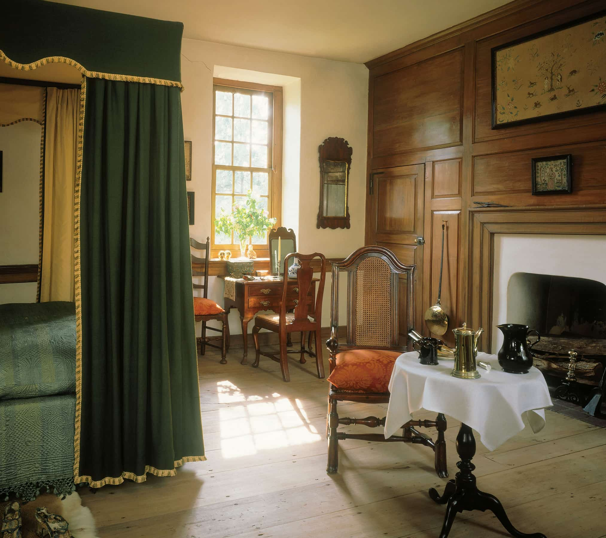

DISCOVER 18TH CENTURY RURAL LIFE IN PENN.
A historic house museum, the 1738 Wright’s Ferry Mansion celebrates important examples of pre-1750 fine art, decorative arts, and architecture, as well as a multi-generational narrative reflective of Columbia, Pennsylvania, and its surrounding region.
Learn more →

floating section


THE MANSION
TIMELESS SUSQUEHANNA
Wright’s Ferry Mansion has been restored by the Louise Steinman von Hess Foundation with great care to accurately represent the period of 1700-1750, when its builder, Susanna Wright — known as “the blue stocking of the Susquehanna”, engaged in intellectual discourse with some of the most inventive and influential minds of 18th century Philadelphia and beyond.
About the mansion →